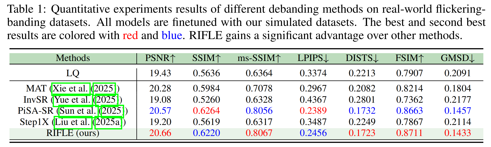

RIFLE: Removal of Image Flicker-Banding via Latent Diffusion Enhancement
Flicker-Banding Removal Results


Abstract
Capturing screens is now routine in our everyday lives. But the photographs of emissive displays are often influenced by the flicker-banding (FB), which is alternating bright-dark stripes that arise from temporal aliasing between a camera's rolling-shutter readout and the display's brightness modulation. Unlike moiré degradation, which has been extensively studied, the FB remains underexplored despite its frequent and severe impact on readability and perceived quality. We formulate FB removal as a dedicated restoration task and introduce Removal of Image Flicker-Banding via Latent Diffusion Enhancement, RIFLE, a diffusion-based framework designed to remove FB while preserving fine details. We propose the flicker-banding prior estimator (FPE) that predicts key banding attributes and injects it into the restoration network. Additionally, Masked Loss (ML) is proposed to concentrate supervision on banded regions without sacrificing global fidelity. To overcome data scarcity, we provide a simulation pipeline that synthesizes FB in the luminance domain with stochastic jitter in banding angle, banding spacing, and banding width. Feathered boundaries and sensor noise are also applied for a more realistic simulation. For evaluation, we collect a paired real-world FB dataset with pixel-aligned banding-free references captured via long exposure. Across quantitative metrics and visual comparisons on our real-world dataset, RIFLE consistently outperforms recent image reconstruction baselines from mild to severe flicker-banding. To the best of our knowledge, it is the first work to research the simulation and removal of FB. Our work establishes a great foundation for subsequent research in both the dataset construction and the removal model design.
Methods
Flicker-banding artifacts when filming screens with smartphone cameras.
Simulation pipeline design.

Overview of our RIFLE model for flicker-banding removal.
Results
Quantitative Comparisons (click to expand)

Visual Comparisons (click to expand)

Datasets
TBD
BibTeX
@article{zhu2026rifle,
title={{RIFLE}: Removal of Image Flicker-Banding via Latent Diffusion Enhancement},
author={Libo, Zhu and Zihan, Zhou and Xiaoyang, Liu and Weihang, Zhang and Keyu, Shi and Yifan, Fu and Yulun, Zhang},
journal={arXiv preprint arXiv:2509.24644},
year={2025}
}